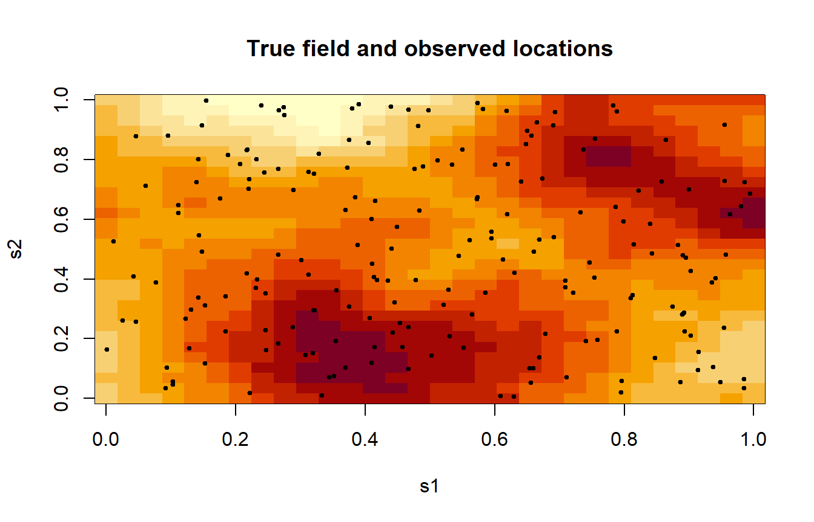
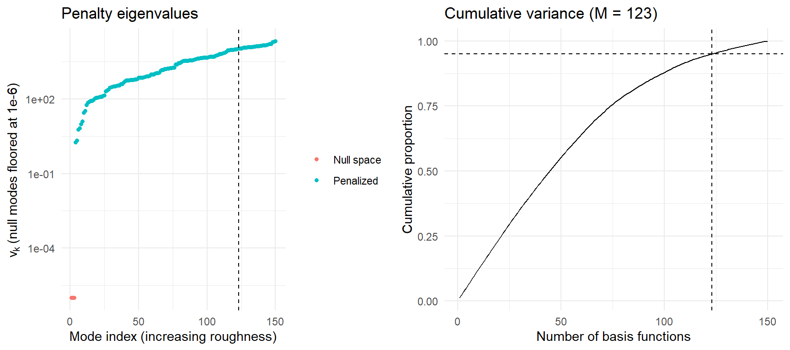
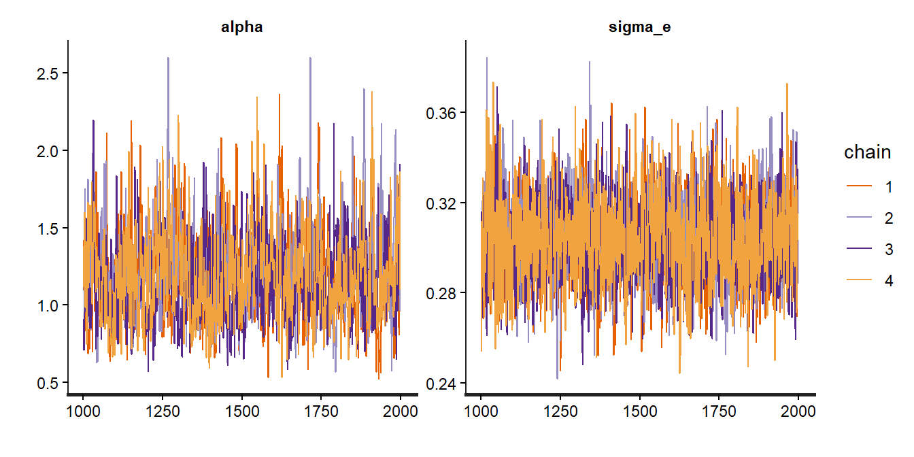
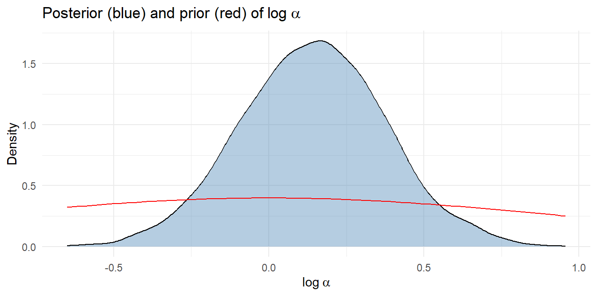
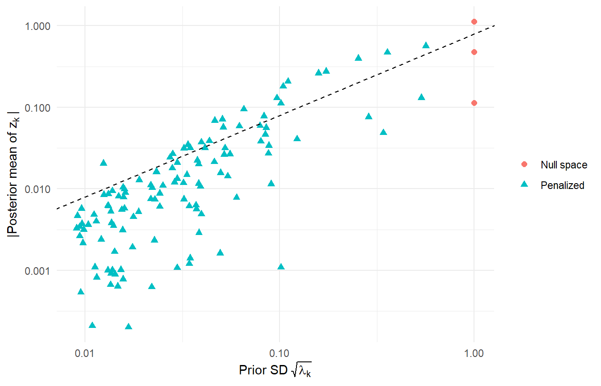
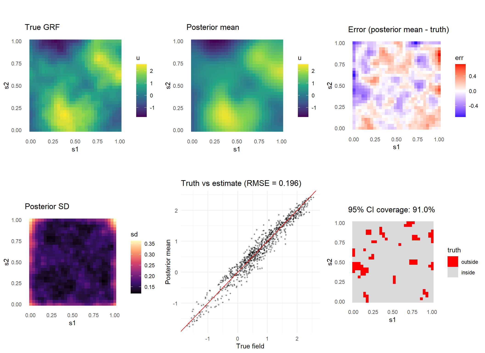
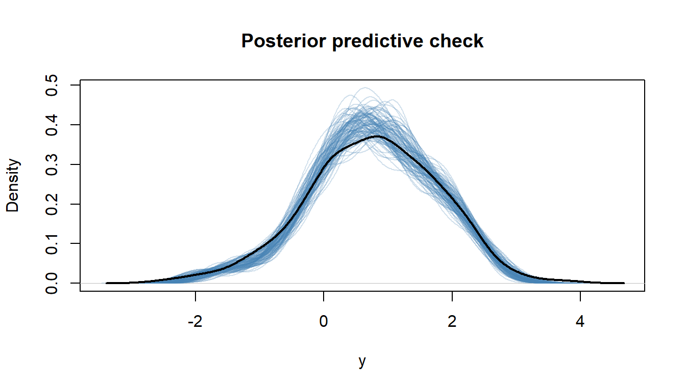
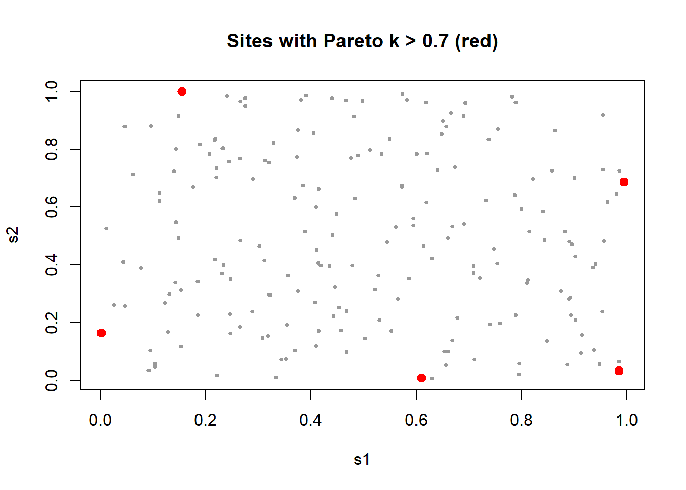
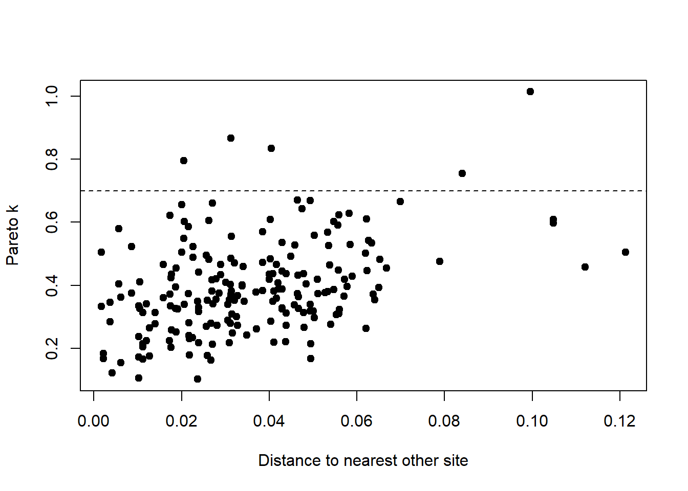

library(pacman)
pacman::p_load(tidyverse, dplyr, parallel, ggplot2,
mgcv, rstan, gridExtra)1 Overview
This tutorial explains and implements regTPS (Cavieres and Krumscheid, 2026 (in press)), a way of approximating a Gaussian random field (GRF) for Bayesian spatial models. The idea is to build the covariance of the field from a regularized thin plate spline (TPS) operator, expand it with a Karhunen-Loève expansion (KLE), and fit the resulting low-dimensional model by MCMC.
Let consider the geostatistical model
\[y_i = u(\mathbf{s}_i) + \varepsilon_i, \qquad \varepsilon_i \overset{\text{iid}}{\sim} \mathcal{N}(0, \sigma_\varepsilon^2), \qquad i = 1, \dots, N,\]
where \(\mathbf{s}_i \in \mathcal{D} \subset \mathbb{R}^2\) and \(u(\cdot)\) is a GRF. No separate mean is included: the constant function belongs to the polynomial null space of the TPS penalty and is handled by the field itself.
The main steps to follow are:
- Build a TPS basis and its penalty matrix \(\mathbf{S}\) (with
mgcv). - Eigendecompose \(\mathbf{S}\) and order the eigenvalues \(v_k\) in ascending order.
- Truncate the expansion at \(M\) modes using a variance-retention rule.
- Place the prior \(z_k \sim \mathcal{N}\big(0, (1+\alpha v_k)^{-1}\big)\) on the coefficients, written in non-centered form.
- Sample \((\tilde{\mathbf{z}}, \alpha, \sigma_\varepsilon)\) with HMC in Stan.
The sections below give the theory, then the code, then a simulation study.
2 Theory
2.1 Gaussian random fields and the Karhunen-Loève expansion
A GRF \(u(\mathbf{s})\) is a collection of random variables such that every finite subset is multivariate normal. It is fully specified by its mean and its covariance function \(C(\mathbf{s}, \mathbf{s}')\). Covariance functions are symmetric and positive semidefinite, and under mild conditions they are Hilbert-Schmidt kernels. Mercer’s theorem then gives
\[C(\mathbf{s}, \mathbf{s}') = \sum_{k=1}^{\infty} \lambda_k \, \phi_k(\mathbf{s})\, \phi_k(\mathbf{s}'),\]
where \((\lambda_k, \phi_k)\) solve the Fredholm eigenproblem
\[\int_{\mathcal{D}} C(\mathbf{s}, \mathbf{s}')\, \phi_k(\mathbf{s}')\, d\mathbf{s}' = \lambda_k \phi_k(\mathbf{s}), \qquad \langle \phi_k, \phi_\ell \rangle_{L^2} = \delta_{k\ell}.\]
Truncating at \(M\) terms gives the KLE of the field,
\[u(\mathbf{s}) \approx \sum_{k=1}^{M} \sqrt{\lambda_k}\, \phi_k(\mathbf{s})\, \epsilon_k, \qquad \epsilon_k \overset{\text{iid}}{\sim} \mathcal{N}(0,1).\]
The practical difficulty is that the eigenpairs are known in closed form only for a few covariances. The regTPS-KLE construction avoids this by obtaining the eigensystem from a penalty matrix that is already available in standard spline software.
2.2 Thin plate splines and the bending energy
For \(f \in H^2(\mathcal{D})\) the thin plate spline bending energy is
\[J(f) = \int_{\mathcal{D}} \left[ \left(\frac{\partial^2 f}{\partial s_1^2}\right)^2 + 2\left(\frac{\partial^2 f}{\partial s_1 \partial s_2}\right)^2 + \left(\frac{\partial^2 f}{\partial s_2^2}\right)^2 \right] d\mathbf{s}.\]
Up to boundary terms this equals \(\int_{\mathcal{D}} (\Delta f)^2\, d\mathbf{s}\), and its Euler-Lagrange operator is the biharmonic operator \(\Delta^2\). \(J\) is a seminorm: \(J(f) = 0\) exactly when \(f\) is a polynomial of total degree at most 1, i.e. \(f \in \mathcal{P}_1 = \text{span}\{1, s_1, s_2\}\). This null space has dimension
\[d_{\text{null}} = \binom{d + m - 1}{d} = 3 \qquad (d = 2,\ m = 2).\]
A smoothing TPS minimizes the penalized least squares functional
\[\mathcal{L}(f) = \sum_{i=1}^{N} \big(y_i - f(\mathbf{s}_i)\big)^2 + \alpha\, J(f), \qquad \alpha > 0.\]
The TPS kernel \(\eta(d) = d^2 \log d\) is the Green’s function of \(\Delta^2\) in \(\mathbb{R}^2\) (up to the constant \(1/8\pi\)). It is only conditionally positive definite, so it is not a valid covariance function, and Mercer’s theorem and the KLE cannot be applied to it directly.
2.3 Regularizing the operator
To obtain a proper covariance, regTPS-KLE replaces the singular biharmonic operator by the regularized elliptic operator
\[L_\alpha = \mathbf{I} + \alpha \Delta^2, \qquad \alpha > 0.\]
It arises from the continuous variational problem
\[\min_{f \in H^2(\mathcal{D})} \int_{\mathcal{D}} (f - g)^2\, d\mathbf{s} + \alpha J(f),\]
whose Euler-Lagrange equation is the fourth-order elliptic PDE \(L_\alpha f = g\). Under suitable boundary conditions \(L_\alpha\) is self-adjoint and boundedly invertible, and its inverse
\[(L_\alpha^{-1} g)(\mathbf{s}) = \int_{\mathcal{D}} K_\alpha(\mathbf{s}, \mathbf{s}')\, g(\mathbf{s}')\, d\mathbf{s}'\]
is compact, self-adjoint and strictly positive definite. Its kernel \(K_\alpha\) is therefore a Hilbert-Schmidt kernel, and Mercer’s theorem applies:
\[K_\alpha(\mathbf{s}, \mathbf{s}') = \sum_{k=1}^{\infty} \lambda_{k,\alpha}\, \phi_k(\mathbf{s})\, \phi_k(\mathbf{s}').\]
2.3.1 The spectrum of \(L_\alpha\)
Let \(v_k\) denote the eigenvalues of \(\Delta^2\) in ascending order, so \(\Delta^2 \phi_k = v_k \phi_k\). Because \(L_\alpha\) is a polynomial in \(\Delta^2\), it shares the eigenfunctions \(\phi_k\), and
\[L_\alpha \phi_k = (1 + \alpha v_k)\, \phi_k \quad\Longrightarrow\quad \mu_k(\alpha) = 1 + \alpha v_k, \qquad \boxed{\;\lambda_{k,\alpha} = \frac{1}{1 + \alpha v_k}\;}\]
The spectrum has two regimes:
| Modes | Eigenvalue of \(\Delta^2\) | KLE variance \(\lambda_{k,\alpha}\) | Interpretation |
|---|---|---|---|
| \(k \le d_{\text{null}}\) | \(v_k = 0\) | \(1\) | Polynomial trends, unpenalized, unit prior variance |
| \(k > d_{\text{null}}\) | \(v_k > 0\), increasing | \((1+\alpha v_k)^{-1} < 1\), decreasing | Increasingly oscillatory modes, shrunk more strongly |
The parameter \(\alpha\) controls how fast \(\lambda_{k,\alpha}\) decays: larger \(\alpha\) shrinks rough modes harder and gives smoother, longer-range fields. It does not change the smoothness class of the field. The order of the operator does, and for \(\Delta^2\) in two dimensions the Matérn-type smoothness is \(\nu = \ell - d/2 = 2 - 1 = 1\).
Treating the null space explicitly, with unit variance, is a central feature of the method. The polynomial part is neither projected out nor penalized, so the field can represent large-scale trends.
2.4 Finite-dimensional (Ritz-Galerkin) approximation
The eigenfunctions \(\phi_k\) are not available in closed form on a general domain. They are approximated in the space spanned by \(K\) TPS basis functions,
\[\mathcal{V}_K = \text{span}\{\tilde\phi_1, \dots, \tilde\phi_K\}, \qquad \tilde{\boldsymbol\phi}(\mathbf{s}) = \big(\tilde\phi_1(\mathbf{s}), \dots, \tilde\phi_K(\mathbf{s})\big)^\top,\]
which in practice is the thin plate regression spline basis of mgcv (bs = "tp", k = K). In this basis, \(f(\mathbf{s}) = \tilde{\boldsymbol\phi}(\mathbf{s})^\top \mathbf{c}\) and the bending energy becomes a quadratic form,
\[J(f) = \mathbf{c}^\top \mathbf{S}\, \mathbf{c}, \qquad S_{jl} = \int_{\mathcal{D}} \Delta\tilde\phi_j(\mathbf{s})\, \Delta\tilde\phi_l(\mathbf{s})\, d\mathbf{s}.\]
The matrix \(\mathbf{S}\) is symmetric positive semidefinite, with a null space of dimension \(d_{\text{null}}\). mgcv computes it in a numerically stable way without evaluating the integral. It is essential to build the basis without the sum-to-zero constraint (absorb.cons = FALSE), so that the constant and linear terms stay in the basis.
2.4.1 Eigendecomposition of the penalty
\[\mathbf{S} = \boldsymbol\Psi_S\, \mathbf{V}_S\, \boldsymbol\Psi_S^\top, \qquad \mathbf{V}_S = \text{diag}(v_1 \le v_2 \le \dots \le v_K), \qquad \boldsymbol\Psi_S^\top \boldsymbol\Psi_S = \mathbf{I}_K.\]
The first \(d_{\text{null}}\) eigenvalues are numerically zero and their eigenvectors span the polynomial trends. The \(k\)-th discrete eigenfunction is
\[\hat\phi_k(\mathbf{s}) = \tilde{\boldsymbol\phi}(\mathbf{s})^\top \boldsymbol\psi_{S,k}.\]
The eigenvalues \(v_k\) of \(\mathbf{S}\) approximate those of \(\Delta^2\) on \(\mathcal{V}_K\), and the approximation improves as \(K\) grows.
Standard versus generalized eigenproblem. A fully consistent Galerkin discretization solves the generalized problem \(\mathbf{S}\boldsymbol\psi = v\,\mathbf{M}\boldsymbol\psi\) with the \(L^2\) mass matrix \(M_{jk} = \int \tilde\phi_j\tilde\phi_k\, d\mathbf{s}\), which keeps the \(\hat\phi_k\) orthonormal in \(L^2\). regTPS-KLE instead solves the standard problem \(\mathbf{S}\boldsymbol\psi = v\boldsymbol\psi\), as is common in TPS software. Modes are then ranked purely by bending energy, and \(\alpha\) absorbs any constant scaling. This is a computational approximation (see Appendix A of the paper).
2.5 Discrete KLE with adaptive truncation
With the discrete eigenpairs, the covariance kernel is approximated by
\[K_\alpha(\mathbf{s}, \mathbf{s}') \approx \sum_{k=1}^{M} \lambda_{k,\alpha}\, \hat\phi_k(\mathbf{s})\, \hat\phi_k(\mathbf{s}'), \qquad \lambda_{k,\alpha} = \frac{1}{1 + \alpha v_k}.\]
The truncation level \(M \le K\) is chosen to retain a proportion \(\gamma\) (typically 0.95 to 0.99) of the total KLE variance:
\[M = \min\left\{ m : \frac{\sum_{k=1}^{m} \lambda_{k,\alpha}}{\sum_{k=1}^{K} \lambda_{k,\alpha}} \ge \gamma \right\}.\]
Because the truncation is decided before sampling, it needs a fixed reference value of \(\alpha\). The implementation below uses
\[\alpha_{\text{ref,scaled}} = \frac{\alpha_{\text{ref}}}{\text{median}\{v_k : v_k > 10^{-10}\}},\]
which makes the truncation rule independent of the numerical scale of \(\mathbf{S}\). It also forces \(\lambda_k = 1\) for \(k \le d_{\text{null}}\) and requires \(M \ge d_{\text{null}} + 5\), so that a few penalized modes are always kept. This \(\alpha_{\text{ref,scaled}}\) is used only to choose \(M\) and to initialize the sampler. The \(\alpha\) that enters the prior is estimated.
2.6 Bayesian formulation
2.6.1 Prior on the coefficients
Writing \(f = \tilde{\boldsymbol\phi}^\top\mathbf{c}\), the penalty \(J(f) = \mathbf{c}^\top\mathbf{S}\mathbf{c}\) corresponds to a Gaussian prior on \(\mathbf{c}\) with precision matrix
\[\mathbf{P}_\alpha = \mathbf{I} + \alpha\mathbf{S}, \qquad \mathbf{c} \sim \mathcal{N}\big(\mathbf{0}, \mathbf{P}_\alpha^{-1}\big).\]
In the rotated coordinates \(\mathbf{z} = \boldsymbol\Psi_S^\top \mathbf{c}\), the precision becomes diagonal, \(\mathbf{I} + \alpha\mathbf{V}_S\), so the components are independent:
\[z_k \sim \mathcal{N}\left(0, \lambda_{k,\alpha}\right), \qquad \lambda_{k,\alpha} = \frac{1}{1 + \alpha v_k}.\]
The field is then \(f(\mathbf{s}) = \sum_{k=1}^{M} z_k \hat\phi_k(\mathbf{s}) = \boldsymbol\Phi(\mathbf{s})^\top\mathbf{z}\).
2.6.2 Non-centered parameterization
To decouple the latent coefficients from the hyperparameter \(\alpha\) and improve HMC geometry, we sample standard normal variables \(\tilde z_k\) and set
\[z_k = \sqrt{\lambda_{k,\alpha}}\,\tilde z_k = \begin{cases} \tilde z_k, & k \le d_{\text{null}},\\[4pt] \dfrac{\tilde z_k}{\sqrt{1 + \alpha v_k}}, & k > d_{\text{null}}, \end{cases} \qquad \tilde z_k \overset{\text{iid}}{\sim} \mathcal{N}(0,1).\]
2.6.3 Likelihood and priors
Let \(\boldsymbol\Psi_M \in \mathbb{R}^{K\times M}\) contain the first \(M\) eigenvectors and \(\tilde{\boldsymbol\Phi} \in \mathbb{R}^{N\times K}\) the TPS basis at the observed sites. The KLE design matrices are
\[\boldsymbol\Phi_{\text{obs}} = \tilde{\boldsymbol\Phi}\,\boldsymbol\Psi_M \in \mathbb{R}^{N\times M}, \qquad \boldsymbol\Phi_{\text{grid}} = \tilde{\boldsymbol\Phi}_{\text{grid}}\,\boldsymbol\Psi_M,\]
and the likelihood is
\[\mathbf{y} \mid \tilde{\mathbf{z}}, \alpha, \sigma_\varepsilon \sim \mathcal{N}\big(\boldsymbol\Phi_{\text{obs}}\,\mathbf{z}(\tilde{\mathbf{z}}, \alpha),\ \sigma_\varepsilon^2 \mathbf{I}_N\big).\]
The hyperpriors are
\[\begin{aligned} \sigma_\varepsilon &\sim \text{Exponential}(\lambda_\sigma), \qquad \lambda_\sigma = -\frac{\log p_\sigma}{\sigma_0}, \quad \Pr(\sigma_\varepsilon > \sigma_0) = p_\sigma,\\ \log\alpha &\sim \mathcal{N}(0, \sigma_\alpha^2),\\ \tilde z_k &\sim \mathcal{N}(0, 1), \qquad k = 1,\dots,M. \end{aligned}\]
The exponential prior on \(\sigma_\varepsilon\) is a penalized complexity (PC) prior. We use \(\sigma_0 = 0.5\) and \(p_\sigma = 0.05\). The joint posterior is
\[p(\tilde{\mathbf{z}}, \alpha, \sigma_\varepsilon \mid \mathbf{y}) \propto \left[\prod_{i=1}^{N} \mathcal{N}\big(y_i \mid (\boldsymbol\Phi_{\text{obs}}\mathbf{z})_i, \sigma_\varepsilon^2\big)\right] \prod_{k=1}^{M}\mathcal{N}(\tilde z_k \mid 0, 1)\ \pi(\alpha)\ \pi(\sigma_\varepsilon).\]
2.6.4 Prediction
For any set of new locations, the field is \(\boldsymbol\Phi_{\text{new}}\mathbf{z}\) with \(\boldsymbol\Phi_{\text{new}} = \tilde{\boldsymbol\Phi}_{\text{new}}\boldsymbol\Psi_M\). Each posterior draw of \(\mathbf{z}\) gives one draw of the field, so uncertainty in \(\alpha\), \(\sigma_\varepsilon\) and the coefficients propagates automatically.
2.7 From the theory to the code
| Quantity | Math | R object | Stan variable |
|---|---|---|---|
| Number of TPS basis functions | \(K\) | k_basis |
|
| Penalty matrix | \(\mathbf{S}\) | sm$S[[1]] |
|
| Penalty eigenvalues (first \(M\)) | \(v_k\) | S_diag_truncated |
S_diag_truncated |
| Retained eigenvectors | \(\boldsymbol\Psi_M\) | evectors[, 1:M] |
|
| KLE design at observed sites | \(\boldsymbol\Phi_{\text{obs}}\) | Phi_kle_sp |
Phi_kle_sp |
| KLE design at prediction grid | \(\boldsymbol\Phi_{\text{grid}}\) | Phi_kle_grid |
Phi_kle_grid |
| Truncation level | \(M\) | M_truncation |
M |
| Null-space dimension | \(d_{\text{null}}\) | M_P_null_space |
M0 |
| Variance threshold | \(\gamma\) | variance_threshold |
|
| Smoothing parameter | \(\alpha\) | alpha = exp(logalpha) |
|
| Whitened coefficients | \(\tilde z_k\) | z_tilde |
|
| Scaled coefficients | \(z_k\) | z |
|
| Noise sd | \(\sigma_\varepsilon\) | sigma |
|
| PC prior rate | \(\lambda_\sigma\) | lambda_sigma_e |
lambda_sigma_e |
3 Implementation in R
First, we will load the main libraries used for this example:
3.1 The regTPS function
regTPS_s() performs steps 1 to 3. It contains no inference code and returns everything needed by the Stan model.
regTPS_s <- function(sp_points, grid_total, y_obs, k_basis,
variance_threshold = 0.95, alpha_ref = 1,
verbose = TRUE) {
#====================================
# Basis and penalty (no centering constraint, so the null space is kept)
#====================================
data_smooth <- data.frame(s1 = sp_points$s1, s2 = sp_points$s2, y_obs = y_obs)
sm <- mgcv::smoothCon(s(s1, s2, k = k_basis, bs = "tp"),
data = data_smooth, absorb.cons = FALSE)[[1]]
Phi_basis_sp <- PredictMat(sm, data_smooth)
Phi_basis_grid <- PredictMat(sm, grid_total)
S <- sm$S[[1]]
#====================================
# Eigendecomposition (S psi = v psi), cleaned and ordered ascending
#====================================
S_eig <- eigen(S, symmetric = TRUE)
S_diag <- S_eig$values
evectors <- S_eig$vectors
S_diag[abs(S_diag) < 1e-12] <- 0
if (any(S_diag < -1e-10))
warning("Negative eigenvalues detected (max magnitude: ",
max(abs(S_diag[S_diag < 0])), ")")
S_diag[S_diag < 0] <- 0
order_idx <- order(S_diag, decreasing = FALSE)
S_diag <- S_diag[order_idx]
evectors <- evectors[, order_idx]
M_P_null_space <- sm$null.space.dim
#====================================
# Variance-based truncation
#====================================
nonzero_eigs <- S_diag[S_diag > 1e-10]
if (length(nonzero_eigs) == 0) stop("No non-zero eigenvalues found.")
# reference alpha, rescaled so that the rule does not depend on the scale of S
alpha_ref_scaled <- alpha_ref / median(nonzero_eigs)
lambda_k <- 1 / (1 + alpha_ref_scaled * S_diag)
lambda_k[1:M_P_null_space] <- 1 # null space: unit variance
total_variance <- sum(lambda_k)
cumvar <- cumsum(lambda_k) / total_variance
M_truncation <- which(cumvar >= variance_threshold)[1]
if (is.na(M_truncation)) M_truncation <- length(S_diag)
M_truncation <- max(M_truncation, M_P_null_space + 5)
if (M_truncation < M_P_null_space) M_truncation <- M_P_null_space
var_explained <- sum(lambda_k[1:M_truncation]) / total_variance
if (verbose) {
cat("Null space dim:", M_P_null_space, "| basis:", length(S_diag),
"| non-zero eig:", sum(S_diag > 1e-10), "\n")
cat("alpha_ref scaled:", round(alpha_ref_scaled, 6),
"| M_truncation:", M_truncation,
"| variance explained:", round(100 * var_explained, 2), "%\n")
}
#====================================
# Truncated matrices
#====================================
idx <- 1:M_truncation
Phi_kle_sp <- Phi_basis_sp %*% evectors[, idx]
Phi_kle_grid <- Phi_basis_grid %*% evectors[, idx]
S_diag_truncated <- S_diag[idx]
list(Phi_kle_sp = Phi_kle_sp,
Phi_kle_grid = Phi_kle_grid,
S_diag_truncated = S_diag_truncated,
M_truncation = M_truncation,
M_P_null_space = M_P_null_space,
alpha_ref_scaled = alpha_ref_scaled,
variance_explained = var_explained,
k_basis = k_basis,
S_diag_full = S_diag,
lambda_k = lambda_k,
cumvar = cumvar,
evectors = evectors,
sm = sm)
}The objects nedded to use regTPS_s() are:
sp_points,grid_total: data frames with columnss1ands2, for the observed sites and the prediction locations. The column names must be exactly these because they appear in themgcvformula.y_obs: the response variable, used only to build the smoothing data frame.k_basis: the number of TPS basis functions \(K\). It must be smaller than the number of distinct sites.variance_threshold: the proportion \(\gamma\) of KLE variance to retain.alpha_ref: the reference \(\alpha\) used for the truncation rule.
4 Stan model
The Stan program is a direct transcription of the non-centered model above. The mian code is the following:
// regTPS-KLE spatial model (non-centered parameterization)
data {
int<lower=1> N; // number of observations
int<lower=1> N_grid; // number of prediction grid points
int<lower=1> M; // M_truncation
int<lower=0, upper=M> M0; // null-space dimension
vector[N] y_obs;
matrix[N, M] Phi_kle_sp; // KLE design at observed sites
matrix[N_grid, M] Phi_kle_grid; // KLE design at prediction grid
vector[M] S_diag_truncated; // penalty eigenvalues v_k
real<lower=0> lambda_sigma_e; // exponential (PC) prior rate for sigma_e
real<lower=0> sigma_logalpha; // prior sd of log(alpha)
}
parameters {
vector[M] z_tilde; // whitened coefficients
real logalpha;
real<lower=0> sigma_e; // Stan adds the log-Jacobian automatically
}
transformed parameters {
real alpha = exp(logalpha);
vector[M] scale; // sqrt(lambda_k)
vector[M] z;
vector[N] field_sp;
for (k in 1:M) {
if (k <= M0) {
scale[k] = 1.0; // null space unpenalized
} else {
scale[k] = 1.0 / sqrt(1.0 + alpha * S_diag_truncated[k] + 1e-10);
}
}
z = scale .* z_tilde;
field_sp = Phi_kle_sp * z;
}
model {
// priors
sigma_e ~ exponential(lambda_sigma_e);
logalpha ~ normal(0, sigma_logalpha);
z_tilde ~ std_normal();
// likelihood
y_obs ~ normal(field_sp, sigma_e);
}
generated quantities {
vector[N_grid] field_grid = Phi_kle_grid * z;
vector[N] y_sim;
vector[N] log_lik;
for (i in 1:N) {
y_sim[i] = normal_rng(field_sp[i], sigma_e);
log_lik[i] = normal_lpdf(y_obs[i] | field_sp[i], sigma_e);
}
}Points worth noting:
- Null space. The
if (k <= M0)branch gives the polynomial modes unit scale, so they carry a \(\mathcal{N}(0,1)\) prior and no smoothing. - Hyperparameters. There are only two, \(\alpha\) and \(\sigma_\varepsilon\). No range or marginal variance of a covariance function is estimated.
- Jacobian. Declaring
sigmawith<lower=0>makes Stan sample on the log scale and add the Jacobian itself. This is what thenlp -= logsigmaline did in the TMB version. - Generated quantities.
field_gridis the posterior field on the prediction grid,y_simsupports posterior predictive checks, andlog_liksupports LOO cross-validation.
5 Simulation study
5.1 Simulate a Matérn field with Gaussian noise
We simulate a Matérn (\(\nu = 3/2\)) field jointly at 200 random observed sites and a \(30\times 30\) prediction grid, then add Gaussian noise at the observed sites. The fitted model uses a TPS prior, so it is not the true data-generating covariance; this is the usual stress test for the approximation.
set.seed(123)
# Settings
n_obs <- 200 # number of observed locations
n_grid_pred <- 30 # prediction grid is n_grid_pred x n_grid_pred
sigma_e <- 0.5 # true noise sd
sigma_u <- 1.0 # true marginal sd of the field
range_u <- 0.3 # spatial range (domain is [0,1]^2)
mu0 <- 0 # constant mean
# Locations
sp_points <- data.frame(s1 = runif(n_obs), s2 = runif(n_obs))
g <- seq(0, 1, length.out = n_grid_pred)
grid_total <- expand.grid(s1 = g, s2 = g)
all_pts <- rbind(sp_points, grid_total)
n_sp <- nrow(sp_points)
n_grid <- nrow(grid_total)
# True covariance (Matern, nu = 3/2)
matern32 <- function(d, sigma, rho) {
h <- sqrt(3) * d / rho
sigma^2 * (1 + h) * exp(-h)
}
D <- as.matrix(dist(all_pts))
Cov_true <- matern32(D, sigma_u, range_u)
# Simulate the field at observed and grid locations jointly
L <- chol(Cov_true + diag(1e-8, nrow(Cov_true))) # upper triangular
u_all <- mu0 + as.vector(t(L) %*% rnorm(nrow(Cov_true)))
u_true_sp <- u_all[1:n_sp]
u_true_grid <- u_all[(n_sp + 1):(n_sp + n_grid)]
# Gaussian observation noise
y_obs <- u_true_sp + rnorm(n_sp, mean = 0, sd = sigma_e)image(g, g, matrix(u_true_grid, n_grid_pred, n_grid_pred),
xlab = "s1", ylab = "s2", main = "True field and observed locations")
points(sp_points$s1, sp_points$s2, pch = 19, cex = 0.5)
5.2 Build the regTPS basis
We use \(K = 150\) basis functions and keep 95% of the KLE variance.
variance_threshold <- 0.95
reg <- regTPS_s(sp_points, grid_total, y_obs, k_basis = 150,
variance_threshold = variance_threshold, alpha_ref = 1)Null space dim: 3 | basis: 150 | non-zero eig: 147
alpha_ref scaled: 0.000408 | M_truncation: 123 | variance explained: 95.07 %5.2.1 Inspecting the spectrum and the truncation
The penalty eigenvalues are zero for the first \(d_{\text{null}} = 3\) modes and then grow quickly. The KLE variances \(\lambda_k\) therefore decay, and the cumulative variance saturates well before \(K\) modes.
M <- reg$M_truncation
M0 <- reg$M_P_null_space
K <- length(reg$S_diag_full)
df_spec <- data.frame(k = 1:K, v = reg$S_diag_full,
type = ifelse(1:K <= M0, "Null space", "Penalized"))
p_spec <- ggplot(df_spec, aes(k, pmax(v, 1e-6), colour = type)) +
geom_point(size = 1.2) +
geom_vline(xintercept = M, linetype = 2) +
scale_y_log10() +
labs(title = "Penalty eigenvalues", x = "Mode index (increasing roughness)",
y = expression(v[k]~"(null modes floored at 1e-6)"), colour = NULL) +
theme_minimal()
df_cum <- data.frame(k = 1:K, cumvar = reg$cumvar)
p_cum <- ggplot(df_cum, aes(k, cumvar)) +
geom_line() +
geom_hline(yintercept = variance_threshold, linetype = 2) +
geom_vline(xintercept = M, linetype = 2) +
labs(title = paste0("Cumulative variance (M = ", M, ")"),
x = "Number of basis functions", y = "Cumulative proportion") +
theme_minimal()
grid.arrange(p_spec, p_cum, ncol = 2)
6 Bayesian inference with Stan
6.1 Data, priors and initial values
The PC prior for \(\sigma_\varepsilon\) states \(\Pr(\sigma_\varepsilon > 0.5) = 0.05\). For \(\log\alpha\) we use \(\mathcal{N}(0, \sigma_\alpha^2)\). The paper reports \(\sigma_\alpha = 3\), while the TMB and Stan code used so far in this project fixed it at 1, so it is exposed as a data input (see the notes at the end).
sigma_prior_s0 <- 0.5 # P(sigma > 0.5) = 0.05
sigma_prior_alpha <- 0.05
lambda_sigma_e <- -log(sigma_prior_alpha) / sigma_prior_s0
sigma_logalpha <- 1.0
stan_dat <- list(N = length(y_obs),
N_grid = nrow(reg$Phi_kle_grid),
M = reg$M_truncation,
M0 = reg$M_P_null_space,
y_obs = as.vector(y_obs),
Phi_kle_sp = unname(as.matrix(reg$Phi_kle_sp)),
Phi_kle_grid = unname(as.matrix(reg$Phi_kle_grid)),
S_diag_truncated = as.vector(reg$S_diag_truncated),
lambda_sigma_e = lambda_sigma_e,
sigma_logalpha = sigma_logalpha)
logalpha_init <- max(min(log(reg$alpha_ref_scaled), 3), -3)
sigma_init <- sd(y_obs)
stan_init <- function(chain_id) {
list(z_tilde = as.array(rep(0, reg$M_truncation)),
logalpha = logalpha_init,
sigma_e = sigma_init)
}6.2 Sampling
The fit is cached in an .rds file so that re-knitting does not resample. Delete regTPS_fit.rds after changing the data, the basis or the Stan program.
fit_file <- "regTPS_fit.rds"
if (file.exists(fit_file)) {
stan_fit <- readRDS(fit_file)
} else {
stan_fit <- sampling(regTPS_mod,
data = stan_dat,
init = stan_init,
chains = 4,
iter = 2000,
warmup = 1000,
seed = 123,
control = list(adapt_delta = 0.9),
refresh = 0)
saveRDS(stan_fit, fit_file)
}6.3 Convergence and hyperparameters
print(stan_fit, pars = c("alpha", "sigma_e"), probs = c(0.025, 0.5, 0.975))Inference for Stan model: anon_model.
4 chains, each with iter=2000; warmup=1000; thin=1;
post-warmup draws per chain=1000, total post-warmup draws=4000.
mean se_mean sd 2.5% 50% 97.5% n_eff Rhat
alpha 1.19 0.01 0.28 0.73 1.16 1.85 665 1.01
sigma_e 0.30 0.00 0.02 0.27 0.30 0.34 2135 1.00
Samples were drawn using NUTS(diag_e) at Wed Oct 7 13:43:08 2026.
For each parameter, n_eff is a crude measure of effective sample size,
and Rhat is the potential scale reduction factor on split chains (at
convergence, Rhat=1).rstan::check_hmc_diagnostics(stan_fit)
Divergences:0 of 4000 iterations ended with a divergence.
Tree depth:0 of 4000 iterations saturated the maximum tree depth of 10.
Energy:E-BFMI indicated no pathological behavior.rstan::traceplot(stan_fit, pars = c("alpha", "sigma_e"), ncol = 2)
The true noise standard deviation is 0.5. The posterior of \(\log\alpha\) can be compared with its prior to see how much the data inform the smoothing:
post <- rstan::extract(stan_fit)
ggplot(data.frame(logalpha = post$logalpha), aes(logalpha)) +
geom_density(fill = "steelblue", alpha = 0.4) +
stat_function(fun = dnorm, args = list(mean = 0, sd = sigma_logalpha),
colour = "red") +
labs(title = expression("Posterior (blue) and prior (red) of"~log~alpha),
x = expression(log~alpha), y = "Density") +
theme_minimal()
6.4 How the prior and the data interact mode by mode
For each retained mode we compare the posterior mean of \(|z_k|\) with the prior standard deviation \(\sqrt{\lambda_{k,\alpha}}\) (averaged over the posterior of \(\alpha\)). Under a prior-dominated mode, \(\mathbb{E}|z_k| = \sqrt{2/\pi}\,\text{SD}_{\text{prior}}(z_k)\), which is the dashed line. Points above the line indicate that the data push the coefficient to larger values than the prior alone would; points near or below it indicate little data-driven learning. The null-space modes (unit prior SD) separate clearly from the penalized ones.
df_z <- data.frame(prior_sd = colMeans(post$scale),
abs_z = abs(colMeans(post$z)),
type = ifelse(1:M <= M0, "Null space", "Penalized"))
ggplot(df_z, aes(prior_sd, abs_z, colour = type, shape = type)) +
geom_point(size = 2) +
geom_abline(slope = 1, intercept = log10(sqrt(2 / pi)), linetype = 2) +
scale_x_log10() + scale_y_log10() +
labs(x = expression("Prior SD"~sqrt(lambda[k])),
y = expression("|Posterior mean of"~z[k]~"|"),
colour = NULL, shape = NULL) +
theme_minimal()
7 Results: true versus estimated field
7.1 Posterior summaries on the grid
spat_field <- post$field_grid # draws x N_grid
post_mean <- colMeans(spat_field)
post_sd <- apply(spat_field, 2, sd)
post_lo <- apply(spat_field, 2, quantile, 0.025)
post_hi <- apply(spat_field, 2, quantile, 0.975)
df <- data.frame(s1 = grid_total$s1, s2 = grid_total$s2,
truth = u_true_grid, post_mean = post_mean, post_sd = post_sd,
err = post_mean - u_true_grid,
inside = u_true_grid >= post_lo & u_true_grid <= post_hi)
rmse <- sqrt(mean(df$err^2))
mae <- mean(abs(df$err))
r2 <- 1 - sum(df$err^2) / sum((df$truth - mean(df$truth))^2)
corr <- cor(df$truth, df$post_mean)
coverage <- mean(df$inside)
data.frame(RMSE = rmse, MAE = mae, R2 = r2, Correlation = corr,
Coverage95 = coverage) RMSE MAE R2 Correlation Coverage95
1 0.1957667 0.150504 0.9485536 0.9742802 0.91Here \(R^2 = 1 - \sum_i (\hat u_i - u_i)^2 / \sum_i (u_i - \bar u)^2\) and Coverage95 is the proportion of grid points whose true value lies inside the 95% credible interval.
7.2 Maps
lims <- range(c(df$truth, df$post_mean))
fld_scale <- scale_fill_viridis_c(limits = lims, option = "D")
base_theme <- theme_minimal() + theme(panel.grid = element_blank())
p_true <- ggplot(df, aes(s1, s2, fill = truth)) +
geom_raster() + fld_scale + coord_equal() +
labs(title = "True GRF", fill = "u") + base_theme
p_est <- ggplot(df, aes(s1, s2, fill = post_mean)) +
geom_raster() + fld_scale + coord_equal() +
labs(title = "Posterior mean", fill = "u") + base_theme
p_err <- ggplot(df, aes(s1, s2, fill = err)) +
geom_raster() + coord_equal() +
scale_fill_gradient2(low = "blue", mid = "white", high = "red", midpoint = 0) +
labs(title = "Error (posterior mean - truth)", fill = "err") + base_theme
p_sd <- ggplot(df, aes(s1, s2, fill = post_sd)) +
geom_raster() + coord_equal() +
scale_fill_viridis_c(option = "magma") +
labs(title = "Posterior SD", fill = "sd") + base_theme
p_scatter <- ggplot(df, aes(truth, post_mean)) +
geom_point(alpha = 0.4, size = 0.8) +
geom_abline(slope = 1, intercept = 0, colour = "red") +
labs(title = sprintf("Truth vs estimate (RMSE = %.3f)", rmse),
x = "True field", y = "Posterior mean") +
theme_minimal()
p_cover <- ggplot(df, aes(s1, s2, fill = inside)) +
geom_raster() + coord_equal() +
scale_fill_manual(values = c("TRUE" = "grey85", "FALSE" = "red"),
labels = c("TRUE" = "inside", "FALSE" = "outside")) +
labs(title = sprintf("95%% CI coverage: %.1f%%", 100 * coverage),
fill = "truth") + base_theme
grid.arrange(p_true, p_est, p_err, p_sd, p_scatter, p_cover, ncol = 3)
Panels to look at first: the posterior SD should be smallest near observed sites and larger in gaps, and the error map should show no obvious spatial pattern. Because the data come from a Matérn field and the model has a fixed TPS smoothness (\(\nu = 1\)), some systematic mismatch is expected.
7.3 Posterior predictive check
Each posterior draw produces a replicated data set y_sim. The thin lines are the densities of 100 replicates and the thick line is the observed data.
y_sim <- post$y_sim
idx <- sample(nrow(y_sim), 100)
dens_obs <- density(y_obs)
dens_rep <- lapply(idx, function(i) density(y_sim[i, ]))
ymax <- max(dens_obs$y, sapply(dens_rep, function(d) max(d$y)))
xr <- range(dens_obs$x, sapply(dens_rep, function(d) range(d$x)))
plot(dens_obs, lwd = 2, ylim = c(0, ymax), xlim = xr,
main = "Posterior predictive check", xlab = "y")
for (d in dens_rep) lines(d, col = adjustcolor("steelblue", 0.25))
lines(dens_obs, lwd = 2)
7.4 Optional: leave-one-out cross-validation
Because log_lik is saved, PSIS-LOO can be computed if the loo package is installed, for example to compare models with different \(K\) or \(\gamma\).
ll <- loo::extract_log_lik(stan_fit, parameter_name = "log_lik", merge_chains = FALSE)
loo::loo(ll, r_eff = loo::relative_eff(exp(ll)))Warning: Some Pareto k diagnostic values are too high. See help('pareto-k-diagnostic') for details.
Computed from 4000 by 200 log-likelihood matrix.
Estimate SE
elpd_loo -80.2 9.3
p_loo 54.3 4.4
looic 160.4 18.6
------
MCSE of elpd_loo is NA.
MCSE and ESS estimates assume MCMC draws (r_eff in [0.5, 1.9]).
Pareto k diagnostic values:
Count Pct. Min. ESS
(-Inf, 0.7] (good) 195 97.5% 276
(0.7, 1] (bad) 4 2.0% <NA>
(1, Inf) (very bad) 1 0.5% <NA>
See help('pareto-k-diagnostic') for details.8 Predicting at new locations without refitting
Any new set of locations can be handled after the fact, because the field is a linear function of \(\mathbf{z}\). Rebuild the KLE design with the stored basis object and eigenvectors, then multiply by the posterior draws of \(\mathbf{z}\).
new_pts <- data.frame(s1 = c(0.25, 0.5, 0.75), s2 = c(0.25, 0.5, 0.75))
Phi_new <- PredictMat(reg$sm, new_pts) %*% reg$evectors[, 1:reg$M_truncation]
field_new_draws <- post$z %*% t(Phi_new) # draws x n_new
data.frame(new_pts,
mean = colMeans(field_new_draws),
lo = apply(field_new_draws, 2, quantile, 0.025),
hi = apply(field_new_draws, 2, quantile, 0.975)) s1 s2 mean lo hi
1 0.25 0.25 1.8600329 1.5749306 2.1524715
2 0.50 0.50 0.4623932 0.1578878 0.7721846
3 0.75 0.75 1.8179683 1.5172865 2.1280493library(loo)This is loo version 2.8.0- Online documentation and vignettes at mc-stan.org/loo- As of v2.0.0 loo defaults to 1 core but we recommend using as many as possible. Use the 'cores' argument or set options(mc.cores = NUM_CORES) for an entire session. - Windows 10 users: loo may be very slow if 'mc.cores' is set in your .Rprofile file (see https://github.com/stan-dev/loo/issues/94).
Adjuntando el paquete: 'loo'The following object is masked from 'package:rstan':
loo# Requires from the tutorial: stan_fit, stan_dat, stan_init, regTPS_mod,
# reg, y_obs, sp_points. The noise parameter is called sigma_e in the Stan model.
#====================================
# 1. Where are the problematic observations?
#====================================
ll_full <- loo::extract_log_lik(stan_fit, parameter_name = "log_lik",
merge_chains = FALSE)
loo_full <- loo::loo(ll_full, r_eff = loo::relative_eff(exp(ll_full)))Warning: Some Pareto k diagnostic values are too high. See help('pareto-k-diagnostic') for details.print(loo_full)
Computed from 4000 by 200 log-likelihood matrix.
Estimate SE
elpd_loo -80.2 9.3
p_loo 54.3 4.4
looic 160.4 18.6
------
MCSE of elpd_loo is NA.
MCSE and ESS estimates assume MCMC draws (r_eff in [0.5, 1.9]).
Pareto k diagnostic values:
Count Pct. Min. ESS
(-Inf, 0.7] (good) 195 97.5% 276
(0.7, 1] (bad) 4 2.0% <NA>
(1, Inf) (very bad) 1 0.5% <NA>
See help('pareto-k-diagnostic') for details.bad <- loo::pareto_k_ids(loo_full, threshold = 0.7)
cat("Observations with k > 0.7:", bad, "\n")Observations with k > 0.7: 24 74 108 126 127 # distance to nearest neighbouring observed site (isolated sites are influential)
Dm <- as.matrix(dist(sp_points[, c("s1", "s2")])); diag(Dm) <- Inf
nn_dist <- apply(Dm, 1, min)
plot(sp_points$s1, sp_points$s2, pch = 19, cex = 0.5, col = "grey60",
xlab = "s1", ylab = "s2", main = "Sites with Pareto k > 0.7 (red)")
points(sp_points$s1[bad], sp_points$s2[bad], pch = 19, col = "red", cex = 1.2)
cat("Median nearest-neighbour distance (all):", round(median(nn_dist), 4), "\n")Median nearest-neighbour distance (all): 0.0323 cat("Nearest-neighbour distance (bad sites): ", round(nn_dist[bad], 4), "\n")Nearest-neighbour distance (bad sites): 0.0405 0.0996 0.0206 0.0312 0.084 plot(nn_dist, loo_full$diagnostics$pareto_k, pch = 19,
xlab = "Distance to nearest other site", ylab = "Pareto k")
abline(h = 0.7, lty = 2)
#====================================
# 2. LOO with the latent coefficients integrated out
# y | alpha, sigma_e ~ N(0, C), C = Phi diag(scale^2) Phi' + sigma_e^2 I
# Closed-form leave-one-out predictive given the hyperparameters:
# mu_{-i} = y_i - [C^-1 y]_i / [C^-1]_ii, var_{-i} = 1 / [C^-1]_ii
# Importance sampling then only has to cope with (alpha, sigma_e).
#====================================
loo_marginal_loglik <- function(stan_fit, reg, y_obs) {
arr <- as.array(stan_fit, pars = c("alpha", "sigma_e")) # iter x chain x par
alpha_vec <- as.vector(arr[, , "alpha"])
sigma_vec <- as.vector(arr[, , "sigma_e"])
chain_id <- rep(seq_len(dim(arr)[2]), each = dim(arr)[1])
Phi <- unname(as.matrix(reg$Phi_kle_sp))
v <- reg$S_diag_truncated
M <- ncol(Phi); M0 <- reg$M_P_null_space; N <- length(y_obs)
ll <- matrix(NA_real_, nrow = length(alpha_vec), ncol = N)
for (s in seq_along(alpha_vec)) {
sc <- c(rep(1, M0), 1 / sqrt(1 + alpha_vec[s] * v[(M0 + 1):M] + 1e-10))
C <- tcrossprod(sweep(Phi, 2, sc, `*`)) + diag(sigma_vec[s]^2, N)
P <- chol2inv(chol(C))
g <- as.vector(P %*% y_obs)
d <- diag(P)
ll[s, ] <- dnorm(y_obs, mean = y_obs - g / d, sd = sqrt(1 / d), log = TRUE)
}
list(ll = ll, chain_id = chain_id)
}
mg <- loo_marginal_loglik(stan_fit, reg, y_obs)
loo_marg <- loo::loo(mg$ll, r_eff = loo::relative_eff(exp(mg$ll), chain_id = mg$chain_id))Warning: Some Pareto k diagnostic values are too high. See help('pareto-k-diagnostic') for details.print(loo_marg)
Computed from 4000 by 200 log-likelihood matrix.
Estimate SE
elpd_loo -238.8 25.0
p_loo 11.3 2.8
looic 477.5 50.0
------
MCSE of elpd_loo is NA.
MCSE and ESS estimates assume MCMC draws (r_eff in [0.2, 0.9]).
Pareto k diagnostic values:
Count Pct. Min. ESS
(-Inf, 0.7] (good) 199 99.5% 574
(0.7, 1] (bad) 1 0.5% <NA>
(1, Inf) (very bad) 0 0.0% <NA>
See help('pareto-k-diagnostic') for details.#====================================
# 3. Exact leave-one-out refits for the problematic points only
#====================================
exact_elpd_i <- function(i) {
d <- stan_dat
d$N <- stan_dat$N - 1
d$y_obs <- stan_dat$y_obs[-i]
d$Phi_kle_sp <- stan_dat$Phi_kle_sp[-i, , drop = FALSE]
fit_i <- rstan::sampling(regTPS_mod, data = d, init = stan_init,
chains = 4, iter = 2000, warmup = 1000, seed = i,
control = list(adapt_delta = 0.9), refresh = 0)
p <- rstan::extract(fit_i, pars = c("z", "sigma_e"))
mu <- as.vector(p$z %*% stan_dat$Phi_kle_sp[i, ])
ll <- dnorm(stan_dat$y_obs[i], mean = mu, sd = p$sigma_e, log = TRUE)
max(ll) + log(mean(exp(ll - max(ll)))) # log mean exp
}
elpd_exact <- vapply(bad, exact_elpd_i, numeric(1))
pw <- loo_full$pointwise[, "elpd_loo"]
elpd_corr <- sum(pw[-bad]) + sum(elpd_exact)
cat("elpd_loo (PSIS, all points): ", round(sum(pw), 1), "\n")elpd_loo (PSIS, all points): -80.2 cat("elpd_loo (exact refits for bad k): ", round(elpd_corr, 1), "\n")elpd_loo (exact refits for bad k): -82.1 9 Conclusions
10 References
- Cavieres, J. and Krumscheid, S. regTPS-KLE: A novel approach to approximate a Gaussian random field for Bayesian spatial modeling. arXiv:2510.04256.
- Wood, S. N. (2003). Thin plate regression splines. Journal of the Royal Statistical Society B, 65(1), 95-114.
- Wood, S. N. (2017). Generalized Additive Models: An Introduction with R. CRC Press.
- Wahba, G. (1990). Spline Models for Observational Data. SIAM.
- Duchon, J. (1977). Splines minimizing rotation-invariant semi-norms in Sobolev spaces.
- Simpson, D. et al. (2017). Penalising model component complexity. Statistical Science.
- Papaspiliopoulos, O., Roberts, G. and Sköld, M. (2007). A general framework for the parametrization of hierarchical models. Statistical Science.
- Carpenter, B. et al. (2017). Stan: a probabilistic programming language. Journal of Statistical Software, 76(1).